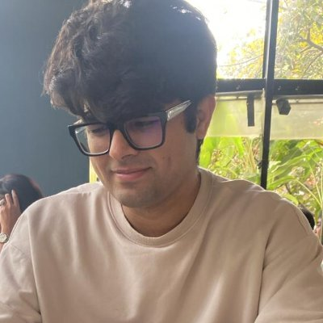
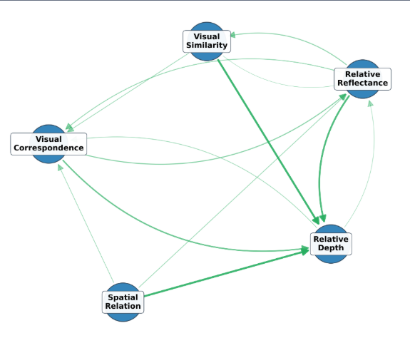
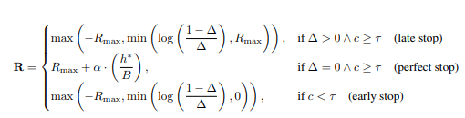
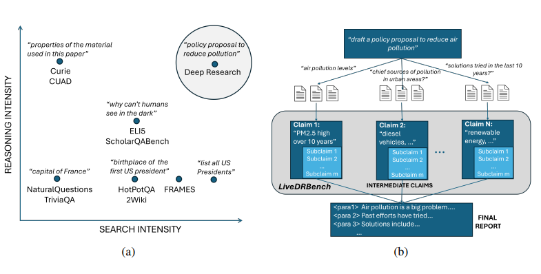

PhD Student
CMU · MLD
Abhinav Java
I'm interested in developing ways for language models to find, use, and learn from large unstructured data sources. My work spans retrieval-augmented generation, efficient post-training, and vision-language models.
I'm fascinated by the idea of disentangling different kinds of knowledge from a model's parameters. I believe language models that leverage external knowledge effectively, rather than memorizing everything in their weights, can be smaller, easier to adapt, and more reliable.
I'm a first-year PhD student in the Machine Learning Department at CMU, where I'm fortunate to be advised by Akari Asai.
Before CMU, I was a Research Fellow at Microsoft Research India, where I was lucky to work with wonderful mentors Amit, Naga, Vineeth, and Srivathsan. Even before that, I was a Research Associate at Adobe Research. I did my undergrad in CS at Delhi Technological University. During my undergrad, I collaborated with the MIT Media Lab and took my first steps as a researcher.
Affiliations
Selected Research
* equal contribution



Updates
37 cities across 4 continents. Drag the globe to explore.